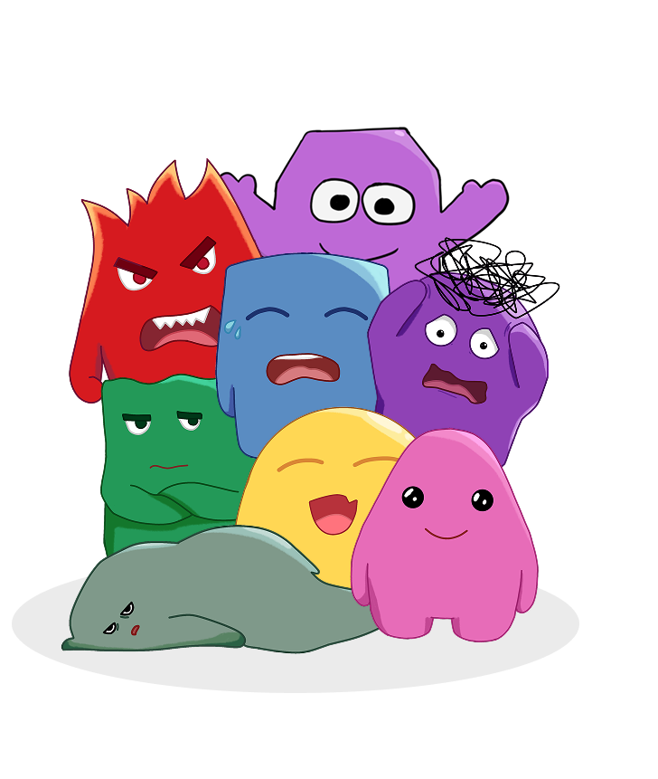
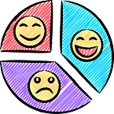
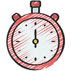
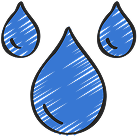
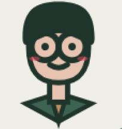

Your-Friend
Dan, Di Atas Segalanya, Sahabat Terbaik Yang Selalu Mendengar Setiap Kisah Dan Menjaga Ketenanganmu.

1. Tracker Mood Harian
Ekspresikan perasaanmu setiap pagi, siang, dan sore hari. Pilih ekspresi karakter maskot yang unik, tulis cerita harianmu dalam jurnal rahasia, dan terima saran aktivitas kustom pengembang emosimu secara instan.
Buka Tracker Mood →
2. Pendamping Belajar
Watcher otomatis yang melacak durasi belajar harian, sehatmu, memberi alarm jeda istirahat peregangan, serta menghitung risiko waktu tidur ideal agar tidak mengantuk di kelas esok pagi.
Alur Waktu Belajar →
SENI MENEMUKAN KEDAMAIAN
3. Sudut Ambience Space
Temukan ketenangan jiwa yang mendalam di sela padatnya jadwal pelajaran sekolah. Mainkan instrumen lo-fi akustik atau gemericik hujan harian, dan kendalikan kecemasanmu melalui panduan meditasi pernapasan kotak ("Box Breathing") teratur.
Buka Ambience Space →
Siapa yang Bisa Akses?
Sistem "Your-Friend" dirancang secara kolaboratif untuk menghubungkan perkembangan emosional peserta didik dengan bimbingan terbaik dari guru.
Akses Siswa
Dapat menggunakan ketiga fitur harian secara interaktif: mencatat kondisi emosi di Mood Tracker, belajar produktif bersama Study Friend, serta melakukan relaksasi di ruang Ambience Space.

Akses Guru
Dapat memantau aktivitas grafik perkembangan kesehatan mental, mendeteksi tingkat stres, dan membaca rangkuman jurnal harian yang dikirimkan siswa untuk langkah pencegahan yang responsif.
Siap jadi versi
terbaik dirimu hari ini?
Your-Friend siap menemani setiap langkahmu menuju keseimbangan, fokus, dan ketenangan.
Mulai Sekarang